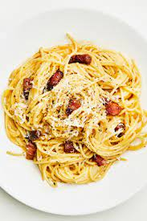

How to cook Pasta Carbonara
Ingredients:

- 8-10 slices bacon,cut into 1/2-inch pieces
- 8 1/2 cups water
- 4 cloves garlic
- 1 lb spaghetti ir linguine
- 1 1/4 cups finely grated Parmesan cheese
- 3 large eggs
- 1 large egg yolk1 tsp each salt and pepper
- chopped fresh parsley
Instructions: Basic steps to cook
- Add bacon and 1/2 cup of the water to a large non--stick skillet and bring to a simmer over medium-high-heat
- Allow to simmer until water evaporates about 6-7 minutes, then reduce heat to medium-low and
continue to cook until bacon is brown and crisp, about 6-8 minutes longer.
- Place a fine mesh strainer over a bowl then pour bacon into strainer while reserving 1 tsp of the rendered fat in pan.
Return pan to heat and saute garlic about 30 seconds, until fragrant and lightly golden.
- Pour into medium mixing bowl then add 1 Tbsp rendered bacon fat(drippings in bowl set under strainer) to mixing bowl with garlic
Add eggs, egg yolk, permesan and pepper to garlic mixture and whisk until well combined
- Pour into medium mixing bowl then add 1 Tbsp rendered bacon fat(drippings in bowl set under strainer) to mixing bowl with garlic
Add eggs, egg yolk, permesan and pepper to garlic mixture and whisk until well combined
- Carefully drain al dente pasta into colander in bowl, while reserving pasta water in bowl, measure out 1 cup hot pasta water.
Immediately place pasta in a now empty large bowl.
- Slowly pour and whisk 1/2 cup pasta water into egg mixture, then slowly pour mixture over pasta while tossing to coat. Add bacon and toss to combine.
season with salt if desired
- Let pasta rest, tossing frequently 2-4 minutes until sauce has thickened slightly and coats pasta. Thin with remaining 1/2 cup hot pasta water as needed.
Serve immediately topped with additional permesan and parsley.